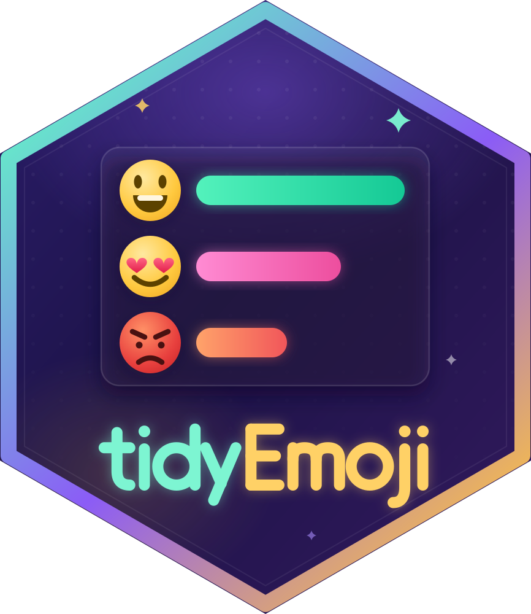

How much of a corpus can each lexicon score?
Source:R/emoji-coverage.R
emoji_coverage.Rdemoji_coverage() reports, for each lexicon, how many of the emoji in a
text column it can score: as a share of the emoji occurrences, as a share
of the distinct emoji types, and as the number of emoji-bearing rows it
leaves without any score at all. It is the figure to report beside any
lexicon-based emoji result, because a lexicon that scores the common emoji
and none of the rare ones can look complete on one of those measures and
patchy on the other.
Arguments
- data
A data frame or tibble containing a text column. Grouped data frames are accepted. The verbs that work a row at a time (adding columns, or keeping and expanding rows) carry the grouping through to their result, as
dplyr::mutate()anddplyr::filter()do. The verbs that pool across rows – the counts, the co-occurrence edge lists, the time series – warn that they ignore the grouping and return one corpus-wide answer.- text
The text column to scan, supplied unquoted. Any atomic column is accepted and read as character, so a
factorworks and a numeric,Dateor logical one simply contains no emoji. A list column – or a data-frame column – is refused rather than coerced, because coercing one deparses it and the emoji found would be in the code rather than in your data. What counts as an emoji is the same in every verb; see the Detection section of tidyEmoji for the one case that surprises people, code points that are emoji only when they carryU+FE0F.- lexicon
NULL(the default) for every lexicon: the two bundled ones and any registered withregister_emoji_lexicon(). Otherwise a character vector of lexicon names; seeemoji_lexicons(). To measure a data frame you have not registered, register it first.- presentation
Which code points count as emoji:
"emoji"(the default) or"any"."emoji"requires emoji presentation, soU+2764 U+FE0Fis an emoji and the bareU+2764is not. This is the default and it will stay the default: widening it would silently recount every corpus already analysed."any"also reads the text-presentation spellings Unicode lists for an emoji (the bare heart,U+263A,U+2714, a keycap without its selector), because several keyboards emit them. It never reads the copyright, registered and trade-mark signs (U+00A9,U+00AE,U+2122), which are typography far more often than they are emoji.
"any"only ever adds occurrences: everything"emoji"finds, it finds too, in the same place.emoji_coverage()reports how many it adds and how many of those a lexicon can score, which is the cost of the choice in one number. Every verb that counts, scores or rewrites the emoji in a text column takes this argument, so counts still agree across the package for whichever value you use. The flag verbs do not need it, since a flag has no text-presentation form.
Value
A tibble with one row per lexicon and columns lexicon,
n_occurrences (emoji in the corpus), n_scorable (those the lexicon can
score), occurrence_coverage (n_scorable / n_occurrences), n_types
(distinct emoji in the corpus), n_types_scorable, type_coverage,
n_rows_with_emoji, n_rows_unscored (rows holding emoji none of which
the lexicon can score), lexicon_size (distinct emoji the lexicon
scores), catalogue_share (lexicon_size as a share of the
catalogue's emoji), n_text_presentation and
n_text_presentation_scorable (see the section above). The two
coverages are NA for a corpus with no emoji. Types are counted by
code-point key, so two spellings of one emoji are one type.
Details
Report two numbers, never one. Emoji use is heavily skewed: a few glyphs make up most occurrences, and a long tail of glyphs turns up once or twice each. So a lexicon built from the common glyphs covers most occurrences and few types, and the two figures answer different questions:
occurrence_coverage: what share of the emoji a reader of this corpus saw can be scored. This is the flattering one.type_coverage: what share of the emoji vocabulary of this corpus can be scored. This is the one that says whether the rare, domain-specific glyphs are measured at all.
On the example corpus, oasst_messages, the two differ by fourteen points
for the bundled sentiment lexicon, 75.0% of occurrences against 61.3% of
types, and the third number is the one with consequences: 135 of the 750
rows that hold an emoji have none the lexicon can score, so their
.emoji_sentiment is NA. Dropping those rows before a comparison drops
a sixth of the data, and not at random.
lexicon_size and catalogue_share describe the lexicon rather than the
corpus: how many distinct emoji it scores, and what share of the emoji in
the catalogue those are. Skin-tone and hair components are not emoji
occurrences (see the Detection section of tidyEmoji) and are left out
of the catalogue's count.
A registered lexicon can score an emoji when it holds a value for it in a
column the scoring verbs read by default: the score emoji_score() and
emoji_sentiment() take (sentiment_score, else score), or an emotion
column emoji_emotion() takes. Its other numeric columns, such as a count
of raters, do not count. A score chosen with score = can cover a
different set.
What presentation costs
The default detection requires emoji presentation, so a bare U+2764
heart is not counted, nor, since 0.7.0, a glyph the writer followed with
U+FE0E to ask for its text form. n_text_presentation is how many such
text-presentation glyphs the corpus holds (the occurrences
presentation = "any" would add), and n_text_presentation_scorable is
how many of those this lexicon could score. Under the default they are
outside every other count here; under presentation = "any" they are
inside n_occurrences. Either way the two columns describe the same
glyphs, so the effect of the choice can be read straight off the table.
See also
emoji_sentiment(), emoji_emotion() and emoji_score(), whose
.emoji_n_scored is the per-row version; emoji_lexicons().
Examples
df <- data.frame(text = c("love it \U0001f60d", "new \U0001fae0 here",
"no emoji", "bare \u2764 heart"))
emoji_coverage(df, text)
#> # A tibble: 2 × 13
#> lexicon n_occurrences n_scorable occurrence_coverage n_types n_types_scorable
#> <chr> <int> <int> <dbl> <int> <int>
#> 1 novak20… 2 1 0.5 2 1
#> 2 emotag1… 2 1 0.5 2 1
#> # ℹ 7 more variables: type_coverage <dbl>, n_rows_with_emoji <int>,
#> # n_rows_unscored <int>, lexicon_size <int>, catalogue_share <dbl>,
#> # n_text_presentation <int>, n_text_presentation_scorable <int>
emoji_coverage(df, text, presentation = "any")
#> # A tibble: 2 × 13
#> lexicon n_occurrences n_scorable occurrence_coverage n_types n_types_scorable
#> <chr> <int> <int> <dbl> <int> <int>
#> 1 novak20… 3 2 0.667 3 2
#> 2 emotag1… 3 2 0.667 3 2
#> # ℹ 7 more variables: type_coverage <dbl>, n_rows_with_emoji <int>,
#> # n_rows_unscored <int>, lexicon_size <int>, catalogue_share <dbl>,
#> # n_text_presentation <int>, n_text_presentation_scorable <int>